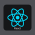
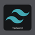

Tecnologias


- Linux -Windows -Git -React -Nextjs -Javascript -Firebase -Tailwind -Bootstrap- SQL -
About me
Hola!, Soy Facundo, un desarrollador Frontend con experiencia en la creación de interfaces de usuario atractivas y funcionales.Con habilidades en Nextjs con React, usando librerias para estilizar como Tailwind y bootstrap estoy comprometido con el aprendizaje continuo y me dedico a desarrollar aplicaciones en mis tiempos libres. Actualmente me encuentro desarrollando mi rol laboral como Analista Funcional, en mi dia a dia realizo seguimiento de proyectos, manuales , soporte y mejora continua, reunion con devs, Testeos y documentacion de estos. Uso herramientas como Trello, Git, Gitlab, Excel, Word y Sql. Espero que te haya interesado mi perfil ¡Gracias por Leer!
Proyectos
-
Geosystems Page
- Front realizado en React, con Material Ui, Utilizando React Routes y React-Toastify
- Rick And Morty App NEW
- Fetch a la Api de Rick And Morty y muestra de estos datos en pantalla
Contact
.png)